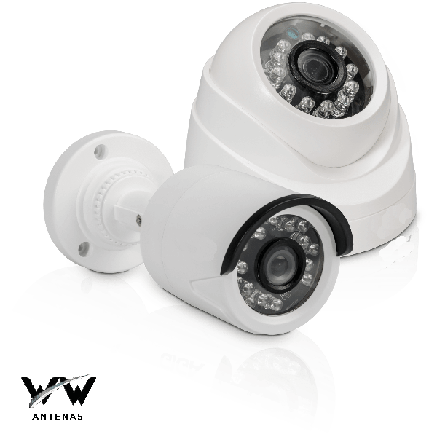
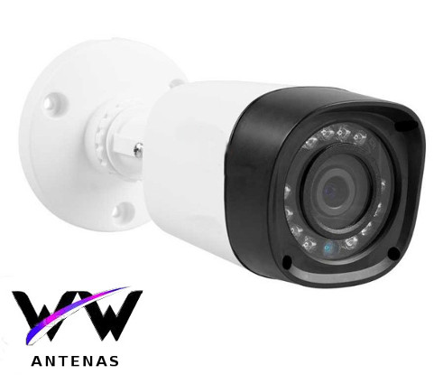
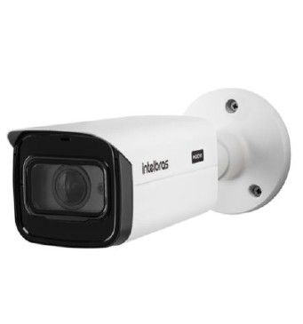

Resoluções que a wwantenas trabalha

Nos últimos tempos teve um bom avanço na tecnologia de cftv. Com isso o mercado de equipamentos com diferenças na resolução de imagem tendeu a aumenta muito. Isso que dizer que hoje podemos encontrar produtos para CFTV que oferecem maior qualidade e definição de imagem, podendo capturar detalhes em grandes áreas de cobertura.
e diferencial e tanto para o mercado de segurança. Poder contar com equipamentos que oferecem altíssima resolução de imagem faz toda a diferença.
Essas são as resoluções de câmeras que nossos técnicos instaladores usam, leia com atenção e escolha a resolução do seu sistema de cftv
HD

A resolução HD é de 720p. Temos uma imagem que contém 1280 pixels de largura por 720 pixels de altura. Assim, as imagens HD fornecem 1 megapixel de resolução.
Câmeras HD podem ser utilizadas em sistemas com sinal analógico ou IP , seu alcance e detalhes nas imagens não são as melhores mas dependendo de onde você vai instalar com esse tipo de câmera a diminuição no custo total do sistema de câmeras e bem expressivo, Seu uso mais comum é residencial, em áreas internas e externas, em que não é necessário utilizar muito zoom nem cobrir grandes espaços.
FULL-HD
Evolução do HD, as câmeras de vigilância Full HD transmitem imagens de 1920 x 1080 pixels. Isso significa que tem resolução de 1080p ou 2MP. Também podem ser usadas em sistemas com sinal analógico ou IP, cobri uma área maior e com uma maior qualidade de imagem
4K

A tecnologia 4K ou Ultra HD é a mais avançada em termos de resolução de imagem. É a que apresenta a maior densidade de pixels, deixando a imagem em altíssima qualidade, da para perceber ate os menores detalhes, mesmo a distancia.
As câmeras 4K têm quatro vezes mais resolução que as Full HD.
HD X Full HD
Veja o vídeo e tire suas dúvidas de qualidade da resoluão HD vs Full-HD
(Comparação de imagens das câmeras de segurança HD (720p) e Full HD (1080p) Intelbras) este video foi idealizado pelo canal(zico shop) e foi postado (youtube:13 de mar. de 2019)
Full HD X 4K
Veja o vídeo e tire suas dúvidas de qualidade da resoluão full hd vs 4K
(4K VS HD: Side By Side Comparisons) este video foi idealizado pelo canal(Dylan Lierz) e foi postado (youtube)